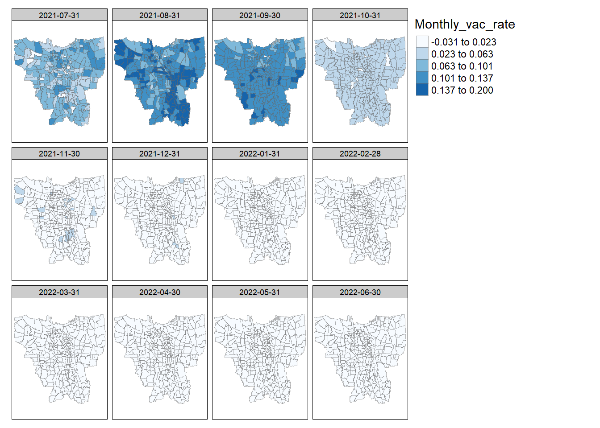

pacman::p_load(sf, sfdep, sp, tmap, plyr, tidyverse, readxl, magrittr, knitr)Take-home Exercise - Application of Spatial Point Patterns Analysis
Discover the geographical distribution of functional and non-function water points in Osun State, Nigeria
1 Getting started
1.1 Installing and Loading Packages
2 Importing data
2.1 Geospatial data
dki = st_read(dsn = "data/geospatial",
layer = "BATAS_DESA_DESEMBER_2019_DUKCAPIL_DKI_JAKARTA")Reading layer `BATAS_DESA_DESEMBER_2019_DUKCAPIL_DKI_JAKARTA' from data source
`C:\p-haas\IS415\Take-home_Ex\Take-home_Ex02\data\geospatial'
using driver `ESRI Shapefile'
Simple feature collection with 269 features and 161 fields
Geometry type: MULTIPOLYGON
Dimension: XY
Bounding box: xmin: 106.3831 ymin: -6.370815 xmax: 106.9728 ymax: -5.184322
Geodetic CRS: WGS 842.1.1 Data exploration
dki = dki %>%
select(c(1:9))2.1.1.1 Transform CRS
dki %>%
st_crs()dki = dki %>%
st_transform(crs=23837)2.1.1.2 Check NA values and duplicates
any(is.na(dki))head(dki[is.na(dki$DESA_KELUR),])The Kelurahan information seems to be missing. We will be using the DESA and KODE_DESA to cross check with the aspatial data what may be the name to fill in the rows. We could consider dropping these two rows now, but I prefer to wait and confirm before dropping NA values.
2.2 Aspatial data
Since we need to merge a series of data sets, we will first take a quick look a them to understand what are the relevant fields for our analysis and what work needs to be performed to have one single data set that will allow us to find the monthly vaccination rate.
The first step is to look at the data set of June 2021. Even though this data set takes record of data from the month prior our analysis period (July 2021 - June 2022) and does not seem relevant, I still think that it is important to compute the monthly vaccination (in dosis administered) and consequently we start with the data of June 2021.
vaccination = read_excel("data/aspatial/before.xlsx")
glimpse(vaccination)Rows: 268
Columns: 21
$ `KODE KELURAHAN` <chr> NA, "3172051003", "317304…
$ `WILAYAH KOTA` <chr> NA, "JAKARTA UTARA", "JAK…
$ KECAMATAN <chr> NA, "PADEMANGAN", "TAMBOR…
$ KELURAHAN <chr> "TOTAL", "ANCOL", "ANGKE"…
$ SASARAN <dbl> 7739060, 20393, 25785, 25…
$ `BELUM VAKSIN` <dbl> 5113425, 13394, 16743, 19…
$ `JUMLAH\r\nDOSIS 1` <dbl> 2623759, 6992, 9033, 6082…
$ `JUMLAH\r\nDOSIS 2` <dbl> 1179448, 3277, 3217, 2636…
$ `TOTAL VAKSIN\r\nDIBERIKAN` <dbl> 3803207, 10269, 12250, 87…
$ `LANSIA\r\nDOSIS 1` <dbl> 502210, 1296, 1999, 816, …
$ `LANSIA\r\nDOSIS 2` <dbl> 448944, 1128, 1746, 702, …
$ `LANSIA TOTAL \r\nVAKSIN DIBERIKAN` <dbl> 951154, 2424, 3745, 1518,…
$ `PELAYAN PUBLIK\r\nDOSIS 1` <dbl> 2014605, 5551, 6859, 4959…
$ `PELAYAN PUBLIK\r\nDOSIS 2` <dbl> 654533, 2044, 1364, 1726,…
$ `PELAYAN PUBLIK TOTAL\r\nVAKSIN DIBERIKAN` <dbl> 2669138, 7595, 8223, 6685…
$ `GOTONG ROYONG\r\nDOSIS 1` <dbl> 33766, 44, 84, 99, 56, 73…
$ `GOTONG ROYONG\r\nDOSIS 2` <dbl> 10610, 12, 27, 22, 13, 24…
$ `GOTONG ROYONG TOTAL\r\nVAKSIN DIBERIKAN` <dbl> 44376, 56, 111, 121, 69, …
$ `TENAGA KESEHATAN\r\nDOSIS 1` <dbl> 73178, 101, 91, 208, 70, …
$ `TENAGA KESEHATAN\r\nDOSIS 2` <dbl> 65361, 93, 80, 186, 63, 3…
$ `TENAGA KESEHATAN TOTAL\r\nVAKSIN DIBERIKAN` <dbl> 138539, 194, 171, 394, 13…Using the glimpse() function we can take a look at the different fields of the data sets that will be imported next. Looking at the fields, it looks like we will be selecting only 3 fields:
KELURAHAN; this field gives information about the sub-district
SASARAN; this field represents the vaccination target of each sub-district
BELUM VAKSIN; this field informs about the population that is yet-to-be vaccinated
Before moving on with the examination of the aspatial data, we shall quickly check for the missing values found in the previous data frame.
vaccination %>%
filter(`KODE KELURAHAN` == 31888888)We may want to check based on the name and will be looking for cells that may contain the DANAU string.
vaccination %>%
filter(grepl('Danau', KELURAHAN))It seems like we can drop the two rows from the dki data set, however, for the purpose of our analysis, I prefer to keep these two sub-districts in the data frame. We may have missing values in our choropleth maps, but it is no problem.
Please find the code chunk necessary to drop NA values in case you deem it to be necessary.
dki = na.omit(dki)vaccination = vaccination %>%
select(4, 5, 6) %>%
rename("Initial Target" = 2, "Initial Yet-to-be Vaccinated" = 3)Now that we have taken a look at the data and selected the relevant fields, we can move on with the data cleaning and merge the vaccination data from July 2021 to June 2022 into the vaccination data frame.
To do so, we will be using a for loop in which we will be performing the following tasks:
Create a list called months that stores the name of every month in our analysis period, this will allow us to customize the name of the columns;
Line 1 and 2 of the loop help us count the month number of our analysis. If you take a quick peak into the later data sets, it seems like Indonesia and the Jakarta region adopted a 3-dosis vaccination plan, meaning that the TOTAL VAKSIN DIBERIKAN is now located on the 10th column from March 2022 on-wards;
Using the paste() function, we replicate the name of the data sets stored in our data folder and use the read_excel() function of the readxl package, we store the data frame into the variable df;
The remaining part of the code serves the purpose of storing Vaccination target data and Yet-to-be Vaccinated data;
count = 0
months = c('July', 'August', 'September', 'October',
'November', 'December', 'January', 'February',
'March', 'April', 'May', 'June')
for (i in months){
filename = paste("data/aspatial/", i, ".xlsx", sep = "")
df = read_excel(filename)
colname1 = paste("Yet-to-be Vaccinated", i)
colname2 = paste("Target", i)
vaccination[colname2] = df %>%
select(5)
vaccination[colname1] = df %>%
select(6)
}Before merging the aspatial data – vaccination data frame – with the geospatial data – dki data frame – we will perform some data exploration to remove any redundant fields and look for any potential duplicates or missing values.
2.2.1 Data exploration
We will begin our data exploration by looking at the target columns. I have an intuition that target data might be the same across some periods of our analysis. To do so, we select only the columns that contain the string Target using the grepl() function.
head(vaccination[ , grepl( "Target" , names( vaccination ) ) ])Looking at the above print, it looks like target data is the same across our 12-month analysis period, thus we will drop the all the above columns and keep only one column for our reference.
Z = vaccination %>%
select(4) %>%
setNames(c("Vaccination Target"))
vaccination = cbind(vaccination[ , !grepl( "Target" , names( vaccination ) ) ], Z)head(vaccination)Looking at the above print, we have successfully replaceed all the target columns for a single one that is now located at the right end of the data frame. We will push it to the front with the following code chunk.
vaccination = vaccination %>%
relocate("Vaccination Target", .after="KELURAHAN")kable(vaccination)Now, we will look for any potential redundant fields or duplicated regions. We shall use the code chunk below to check for duplicates.
any(duplicated(vaccination))There are no duplicates in the data frame. Finally, we will look for NA values.
any(is.na(vaccination))There are no missing values in the data frame, we will now move on to merging the data frame vaccination with the kdi sf data frame.
3 Merging the data
dataMerged = merge(dki, vaccination,
by.x = "DESA_KELUR", by.y = "KELURAHAN",
all = TRUE)head(dataMerged)any(duplicated(dataMerged))any(is.na(dataMerged))It looks like there are NA values even though both data frames were properly cleaned. We should take a peak at the data to understand where this issue comes from.
glimpse(dataMerged[is.na(dataMerged$`Vaccination Target`),])glimpse(dataMerged[st_is_empty(dataMerged),])list.a = setdiff(dki$DESA_KELUR, vaccination$KELURAHAN)
list.a = list.a[order(list.a)]list.b = setdiff(vaccination$KELURAHAN, dki$DESA_KELUR)
list.bWe should take the “TOTAL” value out both of the above list and data frame.
list.b = list.b[-1]vaccination = vaccination %>%
filter(!grepl('TOTAL', KELURAHAN))list.b[order(list.b)]count = 0
region = c("BALE KAMBANG", "HALIM PERDANA KUSUMAH", "JATI PULO",
"KRAMAT JATI", "KERENDANG", "PAL MERIAM", "PINANG RANTI",
"RAWA JATI", "KAMPUNG TENGAH")
for (i in list.a){
count = count + 1
dki$DESA_KELUR[dki$DESA_KELUR == i] <- region[count]
}Finally, we check for any discrepancies within the data frames.
c(setdiff(vaccination$KELURAHAN, dki$DESA_KELUR), setdiff(dki$DESA_KELUR, vaccination$KELURAHAN))It seems like we are clear to merge the data frames again.
dataMerged = merge(dki, vaccination,
by.x = "DESA_KELUR", by.y = "KELURAHAN",
all = TRUE)any(duplicated(dataMerged))any(is.na(dataMerged[-c(268:269),]))any(st_is_empty(dataMerged))It looks like our data frame dataMerged is now cleaned. We can now move on to the last steps before the assignments’ objectives.
3.1 Data visualization
tmap_mode("plot")
qtm(dataMerged)
It looks like the Pulau Islands are included in our data frame. We will take the necessary steps to remove them from the sf data frame.
3.2 Data cleaning
dataCleaned = dataMerged %>%
filter(!grepl('PULAU', DESA_KELUR))tmap_mode("plot")
qtm(dataCleaned)We can now start answering the objectives of the Hands-on Exercise 2.
4 Choropleth Mapping and Analysis
Objectives of this section:
Compute the monthly vaccination rate from July 2021 to June 2022 at sub-district (also known as kelurahan in Bahasa Indonesia) level,
Prepare the monthly vaccination rate maps by using appropriate tmap functions,
Describe the spatial patterns revealed by the choropleth maps (not more than 200 words).
4.1 Monthly Vaccination Rate Computation
vac_minus1 = dataCleaned %>%
extract2(colnames(dataCleaned)[grepl("Initial" , names(dataCleaned))])
vac_target = dataCleaned %>%
extract2(colnames(dataCleaned)[grepl("Target" , names(dataCleaned))])
for (i in months){
vac_current = dataCleaned %>%
extract2(colnames(dataCleaned)[grepl(i , names(dataCleaned))])
colname = paste("Vaccination Rate for", i, sep = " ")
dataCleaned[colname] = abs(vac_current - vac_minus1) / vac_target
vac_minus1 = vac_current
}4.2 Monthly Vaccination Rate Visualization
vac_rate = c(colnames(dataCleaned)[grepl("Vaccination Rate" , colnames(dataCleaned))])
tm_shape(dataCleaned)+
tm_fill(vac_rate,
style = "equal",
palette = "Blues")+
tm_layout(title = vac_rate,
title.position = c("center", "top"),
title.size = 1.2,
legend.position = c("left", "bottom"),
legend.height = 0.45,
legend.width = 0.35,
frame = TRUE)+
tm_borders(alpha = 0.5) +
tm_compass(type="8star", size = 2) +
tm_scale_bar(width = 0.15) +
tm_grid(lwd = 0.1, alpha = 0.2)
tmap_arrange(youngmap, agedmap, asp=1, ncol=2)